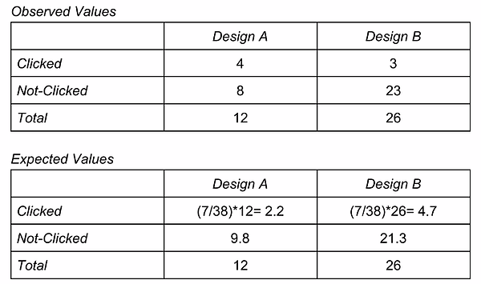

Lee Anne MercadoUser Experience Designer based in OC/ Irvine
About Me
I am a graduate from the University of California, San Diego. I have a B.S. in Cognitive Science with a specialization in Human Computer Interaction and a minor in Design.
Graduation date: June 2018
When I'm not conducting user interviews or creating prototypes, I love to immerse myself in other worlds by watching shows, playing video games, or going to Disneyland. Even through these casual activities, I am constantly inspired to find new ways of enhancing everyday experiences for users.
Learning Equality is a non profit organization that delivers online education to places without wi-fi. A particular feature is the content curation (CC) server where content curators put together the material that learners will see. As a result of conducting interviews and synthesizing information about them, a pain point sources in not having a search function available. The product of this project is a mockup of an overall search feature in the server.
Major Challenges
The most difficult part of this project was creating such a complex function from scratch with no guidelines from superiors to follow, but every step that you will read about truly helped develop my vision for this project. The competitive analysis, though initially overwhelming because search functions have countless features, helped narrow down what would be most useful for my users. The personas, experiences maps, and the previous interviews I had with the users also cultivated the path to the final product. With that said, what I learned most from this project is that getting in the mindset of the user and imagining myself on their journey is the key to funneling my creative thoughts in the right direction.
1. Competitive Analysis
In order to understand the integral features that search functions provide, it was necessary to compare and contrast existing search functions on both educational and non-educational platforms that contained an ample amount of different types of files. From the 8 comparisons, there were clearly different emphasis on different features, depending on the user journey in the website.
(A few examples of the platforms)
For example, while Google Drive focuses on the real time search experience by providing results and other suggested searchable material as a dropdown menu on the bar itself (figure 1), Curriki (an educational platform) does not have these features but instead focuses on the metadata and context on the results page (figure 2). Both these features were considered and incorporated in the final design.
figure 1
figure 2
The most important features that made it into the final design are broken down as follows:
Overall, the competitive analysis helped clarify exactly how a search function can enhance the user experience when interacting with a website.
2. Personas
After a whole quarter of interviewing and understanding the content curator journey through the CC server, these interview results were analyzed and turned into user personas. These personas ranged from expert to novice in regards to exposure to the CC server, honing in on the variety of necessities each of these different levels needed. After analyzing the content curators's backgrounds, motivation & desires, and obstacles to success, it was clear what their respective needs were.
Example of how the personas contributed to the design of the search function:
A novice was having a difficult time understanding exactly what goes in her channel. A way to solve this would be to allow her to explore the fleshed out channels that all users have access to by using the search bar. Instead of having to click through all the different folders, she can simply type in a topic and see what types of materials people have for it, how they use tags, how they utilize the description feature for resources, how they order the folders and resources, etc.
3. Experience Map
As a result of creating the experience map, it was clear that the most important feature of the search bar is that it provides easy access to exploration of the entire server. Having access to it relieves the tension that new (or existing) content curators may be feeling from being overwhelmed and intimidated by the ample amount of information that the CC server contains.
4. Initial Ideas
In order to physically place my ideas about how to design the search function, I created wireframes on paper about potential structures for it.
Afterwards, I moved onto google slides to clearly see how this search function can be integrated into the CC server. Additionally, with the google slides feature of linking slides to each other, I made the prototype clickable to facilitate the experience of what it would be like to use this search function.
Real time search has suggested searchable words and results in the drop down Results page shows relevant resources under three main headers Clicking a resource pulls up the details to the center of the screen Clicking "more info" expands the extra metadata the user may want to know
After multiple iterations on the powerpoint as a result of feedback from staff around the office, I moved the final design on InVision.
5. Final Prototype: InVision
The link to the final prototype can be found here. Some important features of the prototype are the following:
The three headers are rearranged to mimic the hierarchy of what a channel contains. The three main filters that content curators look for is: resources, language, and channels. Hovering over each of the resources expands the details and minimizes clicking for users
UCSD Bus Website
Introduction
The University of California, San Diego has a shuttle system it provides for free for all its students, but surprisingly, it is not widely used by the entire population. The bus website, which should be alleviating this confusion, lacks clarity. My group of 5 people created a prototype redesign of the UCSD bus website.
Major Challenges
Given a short amount of time to complete this project, it was initially worrisome trying to tackle the redesign of such a huge system (the shuttle system). My group and I knew that starting with such a broad perspective was better than immediately narrowing down on something small we did not like because that way, the redesign would truly concentrate on an issue the general population had, not a problem just our group had. Additionally, this taught me the power of performing multiple user interviews. Despite the time it may take, it is worth the tradeoff because factual information is more valuable than assumptions and guesses about what users need help with. Starting large and then narrowing down to the source of the issue was a recurring lesson I learned with this project, especially since this was also the main purpose of the Double Diamond Technique we utilized to come up with our final design.
1. User Interviews
We conducted two sets of interviews in order to narrow down the scope of the problem. The first set of interviews were conducted in order to understand where the problem points were with the shuttle system. After synthesizing the results, we realized that a huge point of tension that we could focus on was the UCSD bus website, which currently looks like this:
After realizing this, we went back out on the field to conduct more user interviews, this time specifically about the website. We asked them to participate in user testing by performing certain tasks on the website and asking them follow up questions about it. Through this, we discovered trends, mistakes, and slips that users made with the website.
2. Double Diamond Technique
In order to gather our thoughts to approach the prototypes, we used the double diamond technique. The technique first dives into all the different problems of the website, then starts narrowing the problems, finds a single problem, explores the different solutions and once again narrows down on realistic solutions for the website. Additionally, in order to settle which solutions were best for the whole team, we decided to do dot voting and the solutions with the most votes made it to the final solution.
We first came up with a wide variety of problems involving the website We then started narrowing down which were the most important issues and came up with one overall problem to solve: "the website is difficult for new users because it requires prior knowledge of routes" We started coming up with tons of different possible solutions to solve the problem After dot voting, we moved the most voted solutions to the narrow part of the diamond, choosing those to be part of our final design
3. Whiteboard Prototypes
We decided to do a sketching session where we each drew out our own preconceptions for the redesign. After this silent session, we came together as a group and critiqued each other’s work while deciding which features we liked best and wanted to put into the final redesign.
4. Paper Prototypes
We created paper prototypes about what would go into our recreation. We had two iterations: the first one elaborated on the layout of the website while the second iteration focused on clarifying and enhancing the “favorites” feature of the website as well as detailing how users can discover new routes through the map.
First Iteration
Second Iteration
5. Final Redesign
We finally moved on to our final redesign, which can be found here, where we made other changes because we realized what looked good on paper did not translate as well on the actual website. A major change we made was that we did not want the map to immediately show on the homepage but to have the user discover it via the arrow on the homepage, which contains the favorite stop times. This as a whole keeps the homepage less cluttered.
Tuber
Introduction
As a part of the Human Computer Interaction Design Course at the University of California, San Diego, my team and I (a group of 3) created a mobile web application based on the topic of "Exchange." We created Tuber, which exchanges information as well as money between college students.
Major Challenges
This was my first real project that involved creating something and it was also my first exposure to some of the coding languages we used for this class. As a result, the entire project in of itself was the challenge for me. Because I felt very vulnerable being exposed to things I have never experienced, I gained an incredibly important skill that I still use with my present projects: shamelessly asking for help and support. With my team as my immediate sources of help and the TAs a message away, I grew out of my shyness because I had no choice; otherwise I would have been a sitting duck on the project. Although I learned tons of new skills such as basic User Experience principles, UX techniques, and new coding languages, what contributed most to my growth was definitely learning how to reach out.
1. Initial Detials
a) Target Audience
UCSD College Students
b) Tools
Google Analytics, Javascript, Bootstrap, Heroku, GitHub, HTML/CSS, JQuery
c) Brainstorming and Inspiration
Something that most college students experience is struggling in a class, but sometimes there is no time to sit down with a tutor (or even look for a tutor) for each class and each test. An efficient solution for this that UCSD professors use is called Piazza, which is the main inspiration of our app. It is an online forum that allows the exchange of questions and answers between students and professors. Although useful, it still lacks the ability to facilitate extended personal help that resembles an actual tutoring session, so where Piazza falters is the beginning of the inspiration in creating our app.
2. Storyboarding & Personas
Storyboarding required us to think about the various types of personas that needed this type of application. These personas are based off of personal experiences as well as conversations we have had with other fellow college students.
a) Storyboard
b) Personas
Marie is a 20-year-old undergraduate Cognitive Science student at UCSD. She loves being involved with her organization and has several positions in it. She struggles with the Math 20 series but with such a packed schedule, she rarely has time to attend office hours, let alone somehow find a tutor. She needs a way to find help with doing better in her math classes while still being able to be involved with what she loves.
Tim is an 18-year-old undergraduate with a Math major at UCSD. He attends office hours for his writing class, Dimensions of Culture, but still he could use more help more often to score the A+ that he wants in the class.
3. Paper Prototypes
In order to easily manipulate the beginning framework of the layout of our app, we utilized paper prototypes, which helped us realize where it faltered and easily allowed us to quickly change any features we needed to. This technique helped facilitate the "fail early, fail fast" ideal.
In addition to drawing out the layouts and rough sketches of the screens, we also made "functional" paper prototypes with each of the screens on different papers. It was functional because we used the "Wizard of Oz" technique, which entails a person moving all the appropriate screens/ buttons as a user taps through the different papers. A live representation of this interaction can be seen in the following video:
4. Online Wireframe
After reiterations, we moved from paper to powerpoint. Utilizing google presentations allowed us to create interactive wireframes. Moving our vision of the app online helped us all get on the same page about where our app was headed as well as rearrange some screen layouts so that they looked cleaner and more intuitive.
5. User Testing
Since our target audience is UCSD college students, it was only appropriate to use them for our user testing. From our testing we discovered areas where wording was confusing, where formats were not clear enough to be intuitive about what to do on that page, and which buttons were too small to be immediately salient to the user.
The user is struggling to make sense of the tutor’s map because when she pressed the markers, she didn’t know that it showed any information because attempting to even press the markers required a very zoomed in version of the page, hence not noticing the information the the markers, which appeared below the map. When assigned the task of creating a new profile for himself, the user found it challenging to automatically notice the “Sign Up” button in the top left corner of the page because the button appeared extremely small relative to the rest of the login screen.
6. A/B Testing
A problem we realized we had was that there was really no incentive for users to further use the app because they had no idea whether or not there were tutors around like how Uber shows nearby drivers. In order to incentivize users to use the app right at the start when entering information about looking for a tutor, we want to let them know that there are indeed available tutors around them who could help them. To present this information, we debated between two different designs.
A) Experiment
The original design was Design A but the some users we tested before thought that it was a section they had to act upon (ie. to choose their tutor), but this should not be the case. This is how we were inspired to make Design B, where it is just informative and less confusing in that aspect. So we compared and contrasted the two different designs with google analytics testing, measuring the amount of unnecessary clicks in that area. The users who were confused about that area would mistakenly tap it.
B) Results

According the data above, 12 users were assigned to the Design A page, which was the design with the blurb of tutors. As for Design B, the design with the simple header indicating how many tutors are online, there were 26 people assigned to it. By evidence of the goal conversion rate, more users clicked around the blurb of tutors area on Design A than the “tutors online” area in Design B, indicating a confusion of the purpose of that area. Whereas those in Design B were more inclined to think about that area as additional information, which was what we intended it for, those in Design A still thought it could be acted upon in order to choose a tutor, which is not the case.
C) Chi-Squared Calculations
As a result of our testing and chi-squared calculations, we did not find a significant difference between the two different designs (but this could also be due to the fact that we did not have a large enough subject pool). Still, there was a small trend that made us lean more towards keeping Design B. Additionally, Design A was not completely optimized for mobile due to the input forms not scaling well with it.
7. Final Product: Mobile Web Application
Essentially, our final application had two main features: the tutor side and the student side.
Student Side:
Tutor Side:
The final application was on herokuapp, which is unfortunately not an active link any longer. The following are a few screenshots from the live website:
Project Title
Use this area of the page to describe your project. The icon above is part of a free icon set by
Flat Icons. On their website, you can download their free set with 16 icons, or you can purchase the entire set with 146 icons for only $12!
Use this area of the page to describe your project. The icon above is part of a free icon set by
Flat Icons. On their website, you can download their free set with 16 icons, or you can purchase the entire set with 146 icons for only $12!
The University of California, San Diego has a shuttle system it provides for free for all its students, but surprisingly, it is not widely used by the entire population. The bus website, which should be alleviating this confusion, lacks clarity. My group of 5 people created a prototype redesign of the UCSD bus website.


 figure 1
figure 1
 figure 2
figure 2